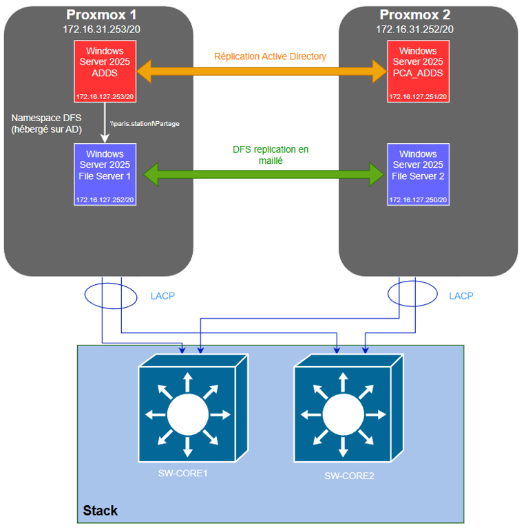

Épreuve professionnelle · BTS SIO SISR
Architecture de partage de fichiers avec DFS et haute disponibilité
Conception et déploiement d'une infrastructure Windows Server
virtualisée sous Proxmox, fournissant un point d'accès DFS
unique aux utilisateurs du domaine paris.stationf,
avec réplication des données entre deux serveurs de fichiers et
automatisation des accès par GPO.

Synthèse du projet
Le projet consiste à mettre à disposition des utilisateurs un
espace de fichiers centralisé, transparent et résilient. Les
utilisateurs accèdent aux ressources par un chemin logique
unique, \\paris.stationf\Partage, sans avoir à
connaître le serveur physique qui héberge réellement les
données.
La solution s'appuie sur deux serveurs de fichiers Windows
Server 2025. Les dossiers publiés dans le namespace DFS sont
répliqués entre ces deux serveurs au moyen de DFS Replication,
en mode bidirectionnel et maillé. L'authentification et
l'autorisation sont assurées par le domaine Active Directory
paris.stationf, avec des comptes organisés en
unités d'organisation par service et par startup, et des GPO qui
automatisent le montage des lecteurs réseau.
| Domaine Active Directory | paris.stationf |
| Namespace DFS | \\paris.stationf\Partage |
| Serveurs de fichiers | FILESERVER1 et FILESERVEUR2 |
| Virtualisation | Proxmox 1 et Proxmox 2 |
| Réplication | DFS-R bidirectionnelle, topologie maillée (full mesh) |
| Commutation | SW-CORE1 et SW-CORE2 en stack |
| Agrégation de liens | LACP sur les liaisons serveurs–stack |
| Accès utilisateur | Namespace DFS et lecteurs mappés par GPO |
Contexte professionnel
Dans une organisation regroupant plusieurs services et startups, les utilisateurs doivent retrouver leurs documents depuis différents postes de travail. Une architecture reposant sur un seul serveur de fichiers crée un point de défaillance unique et oblige les utilisateurs à connaître l'emplacement physique des partages.
Le besoin est donc de fournir un accès uniforme aux ressources, de conserver une copie des données sur deux serveurs, de gérer les autorisations à partir d'Active Directory et de limiter les opérations manuelles côté poste client.
| Besoin | Réponse apportée |
|---|---|
| Accéder aux fichiers avec un chemin stable | Namespace DFS \\paris.stationf\Partage |
| Éviter la dépendance à un serveur unique | Deux cibles DFS pour les données |
| Synchroniser les données | DFS Replication entre les deux serveurs |
| Retrouver son environnement sur plusieurs postes | Profil itinérant et dossier personnel redirigé |
| Appliquer les droits par service | Groupes de sécurité Active Directory |
| Automatiser l'accès | GPO de mappage des lecteurs réseau |
Active Directory : organisation des objets
Le domaine Active Directory est paris.stationf. La
structure comprend une unité d'organisation office,
contenant admin et rh, ainsi qu'une
unité d'organisation startups regroupant les
entités de l'organisation.
Les utilisateurs sont associés à des groupes de sécurité
représentant leur service ou leur startup (gr-rh,
gr-admin, gr-startup1, etc.). Les
droits sont attribués aux groupes plutôt qu'aux utilisateurs
individuellement, ce qui simplifie l'arrivée ou le départ d'un
utilisateur et rend les audits de droits plus lisibles.
Namespace DFS et arborescence des données
Le namespace est publié à l'adresse suivante :
\\paris.stationf\Partage| Dossier DFS | Usage | Public concerné |
|---|---|---|
Profiles | Profils itinérants | Utilisateurs concernés |
DossiersPersonnels | Dossier personnel de chaque utilisateur | Utilisateur propriétaire |
Partage-rh | Documents du service RH | Groupe gr-rh |
Startups | Documents propres aux startups | Groupe de la startup concernée |
\\paris.stationf\Partage
├── Profiles
│ └── ID_UTILISATEUR
├── DossiersPersonnels
│ └── ID_UTILISATEUR
├── Partage-rh
└── Startups
├── startup1
├── startup2
└── ...DFS Replication
DFS-R est configuré entre FILESERVER1 et
FILESERVEUR2 selon une topologie en maillage
complet (full mesh), correspondant ici à une réplication
bidirectionnelle. Chaque serveur dispose d'une copie des
dossiers Profiles, DossiersPersonnels,
Partage-rh et Startups, stockés sur le
disque D:.
D:\DFSData\Profiles
D:\DFSData\DossiersPersonnels
D:\DFSData\Partage-rh
D:\DFSData\Startups
DFS-R ne réalise pas une fusion intelligente de fichiers
modifiés simultanément : en cas de conflit, un fichier est
conservé comme version principale et l'autre peut être placé
dans DfsrPrivate\ConflictAndDeleted. La réplication
protège principalement contre l'indisponibilité d'une cible,
mais ne remplace pas une sauvegarde indépendante contre la
suppression accidentelle ou la corruption.
GPO, profils itinérants et dossiers personnels
Les GPO connectent automatiquement les utilisateurs au namespace DFS via des lecteurs mappés, configurés dans Configuration utilisateur → Préférences → Paramètres Windows → Mappages de lecteurs, en ciblant le namespace DFS plutôt qu'un chemin direct vers un serveur de fichiers.
| Lecteur | Chemin logique | Usage |
|---|---|---|
O: | \\paris.stationf\Partage | Accès aux ressources communes |
P: | \\paris.stationf\Partage\DossiersPersonnels\ID_UTILISATEUR | Données personnelles |
Le profil itinérant et la redirection du dossier personnel permettent à l'utilisateur de retrouver son environnement et ses données depuis n'importe quel poste joint au domaine.
Matrice de droits
| Ressource | Groupe | Droit |
|---|---|---|
Profiles\%username% | Utilisateur propriétaire | Contrôle sur son profil |
DossiersPersonnels\%username% | Utilisateur propriétaire | Modification sur son dossier uniquement |
Partage-rh | gr-rh | Modification |
Partage-rh | gr-admin | Contrôle total (audité) |
Startups\startupX | gr-startupX | Modification limitée au dossier de la startup |
Racine Partage | Utilisateurs authentifiés | Lecture / parcours |
Les droits sont attribués selon le principe du moindre privilège, avec une granularité portée principalement sur les permissions NTFS. Les comptes administrateurs ne sont pas utilisés pour le travail quotidien.
Réseau et virtualisation
Les serveurs Windows sont virtualisés sur deux hôtes Proxmox,
chacun hébergeant un contrôleur de domaine Active Directory et
un serveur de fichiers, afin de répartir les rôles et limiter
l'impact d'une panne d'un hyperviseur. Les liaisons des serveurs
vers la stack de commutation (SW-CORE1 /
SW-CORE2) sont agrégées en LACP pour améliorer la
capacité et la tolérance à la panne d'un lien.
Procédure de déploiement
- Préparer l'environnement : VM Windows Server 2025 sur les deux hôtes Proxmox, adressage IP, DNS, NTP et VLAN.
- Déployer Active Directory et vérifier la réplication entre contrôleurs de domaine.
- Créer les OU, les comptes et les groupes de sécurité.
- Préparer les serveurs de fichiers : jonction au domaine, disque
D:, permissions NTFS. - Installer les rôles DFS Namespaces et DFS Replication, créer le namespace et ses cibles.
- Configurer DFS-R en topologie full mesh sur les dossiers répliqués.
- Configurer les GPO de mappage de lecteurs, redirection de dossiers et profils itinérants.
- Tester et documenter l'accès, la réplication et le comportement lors de l'arrêt d'un serveur.
Plan de tests
| Test | Résultat attendu |
|---|---|
| Résolution du domaine | Contrôleurs et serveurs résolus par DNS |
| Authentification utilisateur | Ouverture de session par un compte du domaine |
| Lecteur commun / personnel | Lecteurs O: et P: montés automatiquement |
| Isolation startup | Une startup ne lit pas les dossiers d'une autre startup |
| Convergence DFS-R | Un fichier créé sur une cible apparaît sur l'autre |
| Indisponibilité d'une cible | L'accès reste possible depuis l'autre serveur |
| Réplication AD | Les objets créés sont répliqués entre contrôleurs |
| Permissions NTFS | Accès autorisés fonctionnels, accès interdits refusés |
gpresult /h C:\Temp\gpresult.html
repadmin /replsummary
Get-Service DFSR
Get-DfsrBacklog -GroupName "NOM_GROUPE_DFSR" -SourceComputerName "FILESERVER1" -DestinationComputerName "FILESERVEUR2"
Get-SmbShare
Get-Acl "D:\DFSData\Partage-rh"Compétences mobilisées
| Compétence | Mise en œuvre |
|---|---|
| Concevoir une solution d'infrastructure réseau | Analyse du besoin, architecture virtualisée, redondance des serveurs et organisation des accès |
| Installer, tester et déployer une solution | Installation des rôles Windows Server, création du namespace, configuration DFS-R et GPO |
| Exploiter, dépanner et superviser | Contrôle de la réplication, diagnostic DNS/GPO/permissions, tests de bascule et suivi des journaux |
Résultat
Les utilisateurs disposent d'un accès transparent aux ressources partagées. Les données sont disponibles sur deux serveurs de fichiers. Les droits sont centralisés et administrables par groupes. La solution est documentée et peut être maintenue ou étendue à de nouvelles startups.
Les mots de passe, adresses IP précises et autres informations sensibles ne sont pas reproduits dans ce document destiné à un portfolio public.